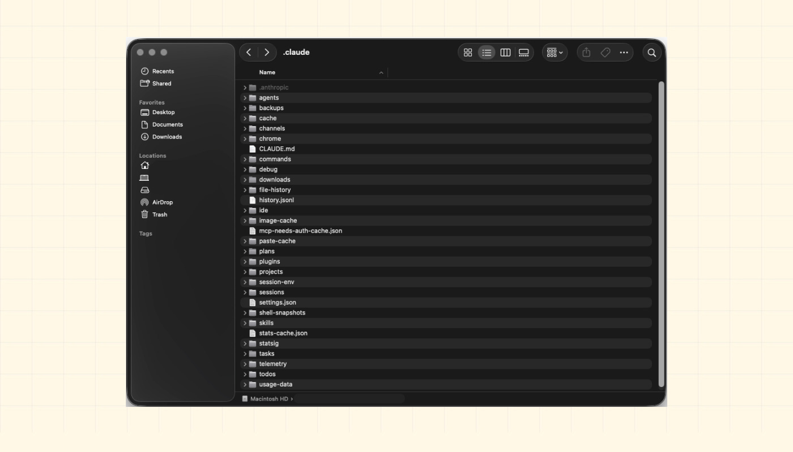
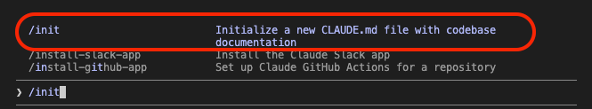
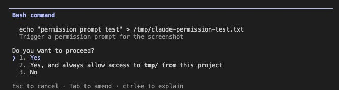
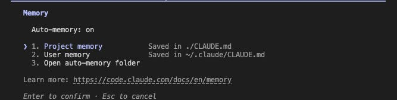
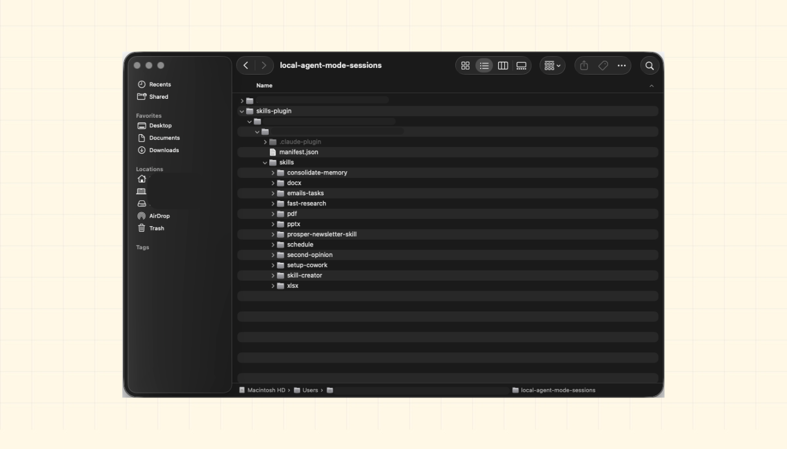

You Won’t Use Claude The Same Way After Understanding This Folder
#157: A map of every file inside, and why it controls what Claude does before you type a word

I’ve been using Claude Code for more than half a year now…daily, for actual work.
For most of the time, I ignored a hidden folder that controlled everything Claude did.
Every session, I copied the same instructions: setup, preferences, and what to avoid1. And Claude kept asking permission for things I’d already approved. So when I opened a new project, it knew nothing.
None of it was necessary…
Claude Code2 is Anthropic’s AI in your terminal.
It reads code, writes files, and runs commands. When you install it, a hidden folder appears: .claude. This folder controls everything: Claude’s instructions, permissions, reusable commands, and session memory3. Configure it right, and Claude walks into every project already knowing the rules.
With the launch of Cowork4, there’s another folder on your machine doing similar work. Same idea, but a different surface. Claude keeps your routines, outputs, and memory5 outside your conversations.
This newsletter gives you a complete map: what’s inside both systems, what each file does, and how it all fits together…
Onward.
Review the actual change, not the file list (Partner)

CodeRabbit Review reorganizes any pull request from a flat file list into a structured, layer-by-layer walkthrough - the logical reading order of the change, not the order your platform happens to sort it. Every range gets its own plain-language summary, with sequence diagrams, state machines, and ERDs generated inline wherever a visual earns its place.
Cohorts group related files, and chunks so you review one idea at a time. Layers order them so foundational changes - data shapes, contracts - come before the code that depends on them. Code Peek lets you click any variable, function, class, or type to see its definition and usages without leaving the tab, while Semantic Diff view cuts past formatting noise to show what actually changed.
Open it straight from the Review Change Stack button in the PR Walkthrough. Navigate cohorts and layers from the keyboard, comment against exact line ranges, and submit native reviews, comments, and approvals post back to GitHub or GitLab right where your team expects them.
In the early access, available for free to everyone.
From the team that pioneered AI code reviews. 2M reviews every week. 6M repos. 15K customers. The review interface built for the way modern PRs are actually written.
>>> Review your next PR with CodeRabbit Review Today
(Thanks to CodeRabbit for partnering on this post.)
I want to introduce Ilia Karelin as the guest author.

He comes from a data background, data science, analytics, and BI, and brings that analytical mindset to Prosper In AI, his newsletter, where he constantly experiments with AI tools and workflows to help professionals adopt AI in ways that actually improve their work and lives.
Follow him on LinkedIn as well.
Here’s what you’ll find inside this newsletter:
The hidden operating system behind Claude Code. What every file in
.claude/actually does, whyCLAUDE.mdis only one piece of the puzzle, and how Claude decides what to load before you type a word.Configuration layer nobody explains. Instructions, permissions, commands, hooks, memory, and MCP servers--what each one controls and where they fit in the stack.
How Claude really works under the hood. The startup sequence, memory system, permission checks, tool pipeline, and why understanding this flow makes debugging dramatically easier.
Claude Code vs Claude Desktop vs Cowork. Where configuration lives, what carries across sessions, what stays local, and why the same workflow behaves differently on each platform.
The mistakes that quietly break Claude. Bloated
CLAUDE.mdfiles, stale memory, overpowered permissions, weak commands, broken hooks, and the patterns that make Claude ignore your rules.
Let’s keep going!
What lives inside
Every file inside the folder falls into one of three categories: instructions, permissions, or reusable commands.
Open a Claude Code session, and this folder is what it reads first. Only then does it act…

.claude folder in your home directory — (/Users/yourname/.claude)💡 Quick note for context:
Claude Desktop is the native app: conversational, no file access.
Cowork6 is the visual workspace: live artifacts, local folders, and autonomous runs.
Yet neither uses the .claude/ folder the way Claude Code does.
They follow the same philosophy: persistent context, reusable actions, and behavior controls. But files live in different places and are managed differently.
(I’ll cover this later.)
Now we know what’s inside, let’s look at exactly where everything lives…
The folder map: what lives where
Here’s the first thing that trips people up…there are two .claude folders:
~/.claude/ lives in your home directory (
/Users/yourname/.claude). This is your “global” Claude configuration. It applies to every Claude Code session you run, across all projects..claude/ lives at the root of a specific repository or working directory (inside a project). Everything here applies only when you’re working inside the project.
Think of these 2 folders as layers…
Claude loads the global config first, then the project config on top of it. i.e., project settings “override” global ones where they conflict.
Here’s what’s in the global folder:
And here’s what you’ll find inside the project folder:
NOTE: CLAUDE.md does NOT live inside .claude/ folder. Instead, it sits at the root of your project.
Think of it this way:
.claude/stores Claude’s settings and behavior rules7CLAUDE.mdstores instructions and project context
They work together, but they are separate files…
Plus, .mcp.json lives at the project root.
Model context protocol (MCP)8 servers allow Claude to connect to external tools such as databases, APIs, and services.
If you want MCP tools available everywhere, configure them globally in
~/.claude/settings.json.But if you want MCP tools for just one project, use
.mcp.jsoninside the project instead.
This matters because different MCP setups can make Claude behave differently across projects.
You can commit the project .claude/ folder to git. i.e., everyone on your team gets the same Claude setup when they clone your repository.
You should commit files like:
settings.jsoncommands/
But do NOT commit settings.local.json. It stores machine-specific paths and personal settings that usually break on other machines.
Claude used to support CLAUDE.local.md for personal instruction overrides… But it’s now deprecated. Today, the recommended approach is to use @ imports inside your main CLAUDE.md.
Also, rules/ helps you split a large CLAUDE.md into smaller files by topic.
For example:
architecture.mdmistakes.mdconventions.md
Claude automatically reads every .md file inside rules/ when a session starts. No imports or extra setup needed. You just add the file, and Claude uses it.
You can also make rules apply only to certain folders.
For example, rules/api-conventions.md can load only when Claude works inside src/api/.
This helps when different parts of the project follow different rules…
TAKEAWAY
Commit these files:
CLAUDE.md.claude/settings.json.claude/commands/.claude/rules/
So when a new engineer clones the repo, Claude already knows the project rules, restricted files, and available commands.
But do NOT commit .claude/settings.local.json. Instead, add it to .gitignore because it stores personal settings. It works only on one machine.
With the folder structure mapped out, let’s dig into the most important file: CLAUDE.md.
CLAUDE.md: instructions layer
CLAUDE.md is not documentation for humans, but instructions for Claude.
Regular docs explain the project to developers: what the app does, how to install it, and how the API works. While CLAUDE.md tells Claude how to behave on a project: what rules to follow, what conventions matter, and what files to avoid.
When you start a session, Claude loads every CLAUDE.md file it can see, in this exact same order:
~/.claude/CLAUDE.md- your global instructions./CLAUDE.md- instructions for the current projectAny
CLAUDE.mdfiles inside subfolders you are working in
They stack together. i.e., each file adds more instructions without replacing the earlier ones.
You can also split large instructions into separate files using @ imports. For example, @docs/architecture.md. Claude will automatically load the file at the start of the session.
This keeps your main CLAUDE.md short while still giving Claude access to deeper project details.
IMPORTANT: imported files still count toward Claude’s context limit. Splitting files improves organization, but it does not reduce the amount of context Claude carries into the session.
Here’s what belongs in CLAUDE.md:
1. Architecture rules Claude cannot infer
Some rules are invisible in the code itself.
For example:
“Never import directly from
utils.ts.”“Always use the shared API client.”
“Do not edit generated files.”
Claude will NOT reliably discover these patterns on its own... So write them down.
2. Environment and workflow context
Include the information a new engineer would spend days piecing together:
which test runner you use
how deployments work
where database configs live
what setup steps usually fail
which scripts matter
3. Hard boundaries
Tell Claude what it should never touch without permission.
Use strong markers like:
IMPORTANTYOU MUST
Anthropic has confirmed emphasis markers improve adherence to instructions.
What does not belong
Do not fill CLAUDE.md with:
long essays
duplicated documentation
theory
things already obvious from the code
Here’s a simple rule:
If removing a line would not change Claude’s behavior, delete it.
CLAUDE.md has no hard length limit. Yet longer files weaken instruction reliability. As the file grows, instructions compete for attention9. And rules near the bottom become easier to ignore than rules near the top…
A 200-line CLAUDE.md is usually not thorough and noisy.
Here’s a tiny but effective CLAUDE.md:
# Project Context
This is a personal finance tracker.
Users log expenses; the app categorizes them.
Run locally with: `npm start`. Tests: `npm test`.
## Rules
- IMPORTANT: never store real financial data in test files
- All database queries go in /db - not scattered across other files
- Don’t touch the /legacy folder - it’s kept for reference only
## Common tasks
- Adding a new feature: check /docs/architecture.md first
- Running into a bug: look in /logs before changing any codeClaude already knows what the project does, what files to avoid, and where to look before changing anything.
Here’s the fastest way to start: run /init inside a Claude Code session. Claude scans your project, detects things like the build system and test framework, then generates a starter CLAUDE.md for you.
That is usually much better than starting from a blank file.

One distinction matters here: prompts and configuration are not the same thing.
Use prompts for one-time requests:
“Explain this simply.”
“Summarize this as bullet points.”
You can use CLAUDE.md for rules that should apply every session:
coding conventions
hard boundaries
project context
workflow rules
Here’s a simple test to help you: If you repeat an instruction in every new session, then put it in CLAUDE.md.
Instructions are only half the picture. Now let’s look at the skills and commands that make Claude reusable…
Skills and commands: reusable workflows
Slash commands are saved workflows you can run anytime.
Type /command-name inside Claude Code, and Claude runs the workflow behind the command. For example, /summarize could summarize meeting notes, pull out action items, and format the result the same way every time.
You can create one without editing files… Just tell Claude Code what you want:
Create a slash command to summarize my meeting notes and pulls out action items.Claude will set it up for you.
Under the hood, each command is just a plain text file with instructions inside it. And you can run the same command repeatedly instead of explaining the same workflow each time.
There are two places commands can live:
~/.claude/commands/- commands you can use across every project.claude/commands/- commands for one specific repository
Also make commands specific. A vague command like “do the best version of this” will produce different results each time.
Here’s what a good command defines:
exact steps
expected input
output format
what Claude should avoid
More specific commands produce more consistent results…
Besides commands/ and skills/ are different10:
commands/are simple. One file, one workflow, triggered when you type/name.skills/are more advanced. A skill can include folders, supporting files, and a fullSKILL.mddefinition. Start with commands. Use skills when the workflow becomes bigger than one file.
Skills can also trigger automatically. Claude reads the description field in SKILL.md and uses it to decide when the skill fits your request.
For example, if a skill’s description says it handles research tasks, Claude may use it when you ask for research.
agents/- They define specialized subagents that Claude can delegate work to, such as a code reviewer or a security auditor. You probably do not need them at first. Theagents/folder holds the definitions for those. And they are for advanced setups where many Claude workers handle different parts of a task.plugins/- Claude Code has a plugin marketplace. The `plugins/` folder stores what you’ve installed and which marketplaces are configured. You can browse and install plugins directly from inside a Claude Code session:
Commands and skills11 handle what Claude does. Next, let’s look at what Claude is allowed to do…
Know someone who wants to learn system design? Consider gifting a subscription:
Settings and hooks: event control system
settings.json controls what Claude is allowed to do.
You will usually see it in two places:
~/.claude/settings.json- global settings that apply to every Claude Code session on your machine.claude/settings.json- project settings that apply only inside one repo
You can edit these files directly…Or you can simply tell Claude what you want…
For example:
“Always allow reading files without asking.”
Claude can update the file for you.
By default, Claude asks before doing anything important:
reading files,
editing files,
running terminal commands,
calling external tools.
And settings.json lets you make those decisions “permanent”.
Here is the basic structure (for permissions):
{
"permissions": {
"allow": [
"Read(**)"
],
"deny": [
"Bash(rm -rf:*)"
]
},
"env": {
"MY_VAR": "value"
},
"cleanupPeriodDays": 30,
"autoUpdatesChannel": "stable"
}allowsection lists actions Claude can run without asking.denysection blocks actions completely.
In this example:
Claude can read any file without confirmation
But Claude can never run
rm -rf, a command to permanently delete files and foldersEverything else it asks first
The env section stores environment variables for every session. Use it for API keys you do not want to type repeatedly.
Here are two other useful settings:
cleanupPeriodDayscontrols how long session files stay on diskautoUpdatesChannellets you stay on the stable release channel instead of newer experimental builds
Let’s look at an example:

settings.json lets you make these decisions permanent.This tells Claude:
Reading any file is always allowed.
Never run
rm -rf, a command that permanently deletes files and folders.Ask for permission before doing anything else
Hooks: automation triggered by events
Hooks let you run actions automatically when events occur in Claude Code.
Think of them like “event listeners”…
Here are the 5 most useful hook events:
PreToolUse- runs before Claude uses a toolPostToolUse- runs after a tool succeedsStop- runs when Claude finishes respondingSessionStartandSessionEnd- run at the beginning and end of a sessionUserPromptSubmit- runs right after you send a prompt, before Claude processes itPreCompact- runs before Claude compresses conversation history
Here is a simple PostToolUse hook:
{
"hooks": {
"PostToolUse": [
{
"matcher": "Write",
"hooks": [
{
"type": "command",
"command": "npm test"
}
]
}
]
}
}This runs npm test every time Claude writes a file.
The matcher field limits the hook to one tool. Remove it, and the hook runs after every tool call.
Hooks can also run at the session level.
For example, a SessionEnd hook could automatically create a log file showing:
what Claude changed
what commands ran
which files were touched
You don’t need to enter manual commands. Instead, Claude does it automatically when the session ends.
settings.local.json works the same way, but stays only on your machine. You can use it for:
personal preferences,
machine-specific paths,
local-only settings.
SAFETY NOTE: Do NOT store secrets directly in CLAUDE.md or shared settings files. Those files can end up in git. Instead, use the env section.
Another warning… hooks run with your “full” user permissions.
A hook can:
read files,
make network requests,
run shell commands,
access anything your terminal can access.
This is powerful but dangerous…
So read hook scripts before trusting them, especially in unfamiliar repositories.
For destructive actions, use explicit deny rules. A hard block like:
"deny": ["Bash(rm -rf:*)"]…is much safer than hoping Claude asks politely before deleting files.
Permissions and hooks control Claude’s behavior.
Now let’s look at how it remembers things between sessions…
Memory: How Claude persists state across sessions
Memory is what lets Claude carry information from one session to the next.
Inside ~/.claude/projects/ Claude creates a folder for every project you work on. And each project gets its own memory.
The memory/ folder stores information Claude should remember.
For example, if you tell Claude:
“Always use tabs in this project.”
Claude can save the preference and load it “automatically” in future sessions. These memory files are plain text. You can open, edit, or delete them whenever you want.
Claude can also save memories automatically12…it may remember:
build commands,
project conventions,
workflow preferences,
corrections you made during earlier sessions.
If you want to see what Claude has remembered, just run:
/memoryThis opens a view where you can:
browse saved memories,
edit entries,
delete entries,
disable automatic memory.
The files are plain markdown; you can also open them in any text editor and change whatever you want.

memory command in the terminalLet’s keep going!
Todo tracking
The todos/ folder helps Claude track multi-step tasks.
If Claude is working through a long task with several steps, it can store progress here and continue later if the session is interrupted.
File history
The file-history/ folder stores previous versions of files Claude has edited.
If Claude changes a file and the result is wrong, you may be able to recover an earlier version from here.
Think of it as a safety net for Claude-generated edits.
Configuration backups
The backups/ folder stores backup copies of Claude configuration files.
If you accidentally break a setting or want to undo a change, you can restore an earlier version from these backups.
Memory gives Claude continuity between sessions.
Next, let’s look at how all these layers work together…
Know someone who wants to learn system design? Consider gifting a subscription:
How layers talk to each other
When you open Claude Code, it always loads things in the same sequence:
Read
~/.claude/settings.jsonLoads your global permissions, hooks, and settings that apply across every project.
Read
.claude/settings.jsonLoads project-specific settings. These can add to or override the global settings for this repo.
Load
~/.claude/CLAUDE.mdLoads your personal instructions, preferences, and coding habits into Claude’s context.
Load
./CLAUDE.mdLoads project-specific rules, conventions, architecture notes, and workflow guidance.
Load any relevant subdirectory
CLAUDE.mdfilesLoads extra instructions for the part of the codebase you are currently working in.
Load
~/.claude/projects/<hash>/memory/Loads saved memories from previous sessions, such as project preferences, build commands, or recurring patterns.
Make commands available from
~/.claude/commands/ and .claude/commands/Loads your reusable slash commands, both global commands and project-specific workflows.
The important thing to know: settings override, but instructions add up.
Project settings take priority over global settings, and CLAUDE.md files layer together instead of replacing one another.
This startup sequence runs once when you open Claude Code.
After that, every message follows a second pipeline:
Claude reads your request using all the instructions, settings, and memory loaded at startup.
Claude decides which tools it needs, such as reading files, editing code, or running terminal commands.
Claude checks whether it has permission to use each tool.
Allowed actions run automatically. Restricted actions either ask for approval or get blocked, depending on your settings.
Any matching hooks run before and after the tool call13.
Claude generates a response; if auto-memory is on, it saves relevant facts to
memory/
That’s why most debugging starts at startup.
When Claude ignores a rule or a hook doesn’t fire, check steps 1–3 first. Usually, it’s a file that didn’t load, a permission with the wrong scope, or a rule buried too deep in CLAUDE.md.
Now we understand the full load sequence, let’s look at how this applies to Claude Desktop and Cowork…
Claude Desktop vs Cowork
Claude Code lives in your terminal…You edit configuration files directly.
Claude Desktop and Cowork follow the same idea: give Claude instructions, memory, and reusable workflows.
The difference is the interface:
Claude Code uses files. While Claude Desktop and Cowork wrap those concepts in a graphical UI.
Claude Desktop
Claude Desktop connects to your machine through Model Context Protocol (MCP) servers.
MCP is an open standard that lets Claude access external data and services. You configure these connections in:
~/Library/Application Support/Claude/claude_desktop_config.jsonThese connections let Claude:
read files on your computer,
pull data from other tools,
connect to external services.
Yet Claude Desktop does not use the Claude Code configuration system.
It cannot:
read your
.claude/folders,load your
CLAUDE.mdfiles,use Claude Code slash commands.
Claude Desktop has its own skills system stored in local-agent-mode-sessions/. The two systems stay separate and do not share configuration.
Cowork
Cowork sits closer to the .claude/ model.
You manage it through a graphical interface, but the core idea stays the same: instructions, workflows, and memory that persist over time.
The biggest difference is where the configuration lives…
With Claude Code:
configuration lives in files on your machine,
you can search it with tools like
grep,you can commit it to git,
you can share it through a repository.
With Cowork:
configuration lives in your Claude account,
remote routines run in the cloud,
local routines run inside the app,
your setup follows your account.
This leads to one practical difference:
Cowork’s remote routines keep running even when your laptop is closed. While Claude Code requires an active session.
If you want to share a complete Claude setup with someone else, Claude Code is the better choice. Commit your .claude/ folder to the repository, and anyone who clones it gets the same configuration.
Cowork does NOT currently offer this workflow… Each person configures their own environment.
Local Cowork session files
Here’s one folder worth knowing:
~/Library/Application Support/Claude/local-agent-mode-sessions/Claude Desktop writes several types of data here:
artifacts.json- a registry of every artifact Claude has created across sessionsdebug/- session logs to help you troubleshoot problemsagent/memory/- memory used by Claude Desktop sessions

local-agent-mode-sessions folder looks like on my machineClaude Documents folder
There is another important location:
~/Documents/Claude/…Cowork stores session outputs & scheduled routines here.
Inside, you will find several sub-folders:
Pay special attention to Scheduled/.
Each Cowork routine gets its own folder containing a SKILL.md file. The file is plain text and follows the same structure as Claude Code skills.
The difference is how you edit it:
Claude Code uses a text editor
Cowork uses a graphical interface
Under the hood, the skill definition is nearly identical.
Automatic artifact versioning
The Artifacts/ folder includes a built-in version history.
Each HTML artifact gets a versions/ subfolder that stores timestamped snapshots.
In practice, Cowork automatically versions your outputs, so you can review or restore earlier versions when needed.
Now you understand where Claude stores instructions, workflows, permissions, and memory, let’s look at what breaks and how to fix it…
Know someone who wants to learn system design? Consider gifting a subscription:
Common failure modes and how to fix them
Configuration problems cause more issues than prompts.
Fortunately, most are easy to fix once you know where to look…
Claude ignores your rules
Sometimes Claude skips instructions in CLAUDE.md.
Here are the usual reasons:
vague wording,
conflicting instructions,
too many rules packed into one file.
As CLAUDE.md grows, instructions compete for attention. And rules buried near the bottom become easier to miss.
To improve adherence:
Put critical rules at the top.
Use strong markers like
IMPORTANT:orYOU MUST.Remove instructions that never change Claude’s behavior.
Here’s one edge case worth knowing…
After you run /compact, Claude automatically reloads the project-level CLAUDE.md. But nested CLAUDE.md files inside subdirectories do NOT reload immediately.
Claude reloads them only when it reads files from those directories again.
Claude remembers the wrong thing
Memory can become stale.
For example, Claude may keep using an old build command or follow a workflow you no longer use.
To fix this, run:
/memory…then open the memory view.
Every saved memory is stored as plain markdown. You can:
edit entries,
remove outdated information,
disable automatic memory.
Think of memory like project notes. If the notes are wrong, Claude will make the wrong assumptions.
Permission prompts keep appearing
You clicked “always allow,” yet Claude still asks.
In most cases, multiple settings files are involved.
So run:
/statusThis shows:
active settings layers,
which files loaded,
where each permission came from.
For example, a project setting may override a global setting without you realizing it.
When you run /status, Claude shows every active configuration layer so you can trace the source of the problem.
A hook runs, but nothing happens
This is one of the hardest problems to spot because the hook appears to work.
To debug it, run:
claude --debugClaude writes a detailed log to:
~/.claude/debug/<session-id>.txtThe log shows:
which hooks matched,
each hook’s exit code,
standard output (
stdout),error output (
stderr)
Most silent failures come from one of two causes:
Hook cannot find the program it needs to run. Hooks do not always inherit the same environment as your terminal. Use absolute paths or define environment variables in
settings.json.Hook returns the wrong exit code. Hook executes, but Claude interprets the result differently than you expect.
The debug log usually reveals the issue in a few minutes.
Now you know the common failure modes, let’s finish with the configuration patterns that create them in the first place…
Anti-patterns
Let’s look at work patterns that could decrease your efficiency:
Write rules in CLAUDE.md, not wishes
Claude follows clear constraints better than vague goals:
“Always write clean code” is a wish.
“Never import directly from
utils.ts” is a rule.
The first leaves room for interpretation…The second tells Claude exactly what to do.
Rule of thumb: If a rule describes a specific mistake Claude could make, keep it. If it sounds like general advice, remove it.
Permissions that are too broad
Be careful with global permissions!
For example:
"allow": ["Bash(*)"]…inside ~/.claude/settings.json gives Claude permission to run any terminal command across all projects on your machine.
That could solve permission prompts in one project. But it also removes safeguards everywhere else.
A better approach is to grant broad permissions only where you need them. Put project-specific permissions in that project .claude/settings.json instead of your global settings.
Here’s a simple rule:
Global settings for rules you want everywhere.
Project settings for permissions that apply to one repo only.
Commands that are just prompts
“Write a clear and helpful summary of this document” is a prompt.
A useful slash command defines the output format, steps, and scope. If the output varies, the command needs more specificity.
Don’t accept .claude folders without reading them
Hooks in settings.json can run shell commands with your FULL permissions.
Before you start Claude Code in someone else’s repository, check the .claude folder and review any hooks it contains.
Don't put temporary context in CLAUDE.md
CLAUDE.md is for long-term rules and project knowledge.
Temporary notes belong in the prompt. For example:
“We are currently refactoring the auth module.”
That may be useful today. A few weeks later, it could confuse Claude and lead it in the wrong direction.
Importing large reference files just in case
Every file you import with @ gets loaded into every session.
For example:
@docs/architecture.md…loads the architecture document even when you’re making a small change to a README.
This extra context takes up space and can distract Claude from the task at hand.
A simple rule:
Import only the files Claude needs in every session.
Put occasional or task-specific information in the prompt instead.
You now have the full picture…let’s bring it all together…
Closing Thoughts
Many people still use Claude like a chat app with a few extra tools…
Claude Code works best when you treat it like a configurable system.
Once you set up the configuration layer, every session starts with your rules, permissions, workflows, and project knowledge already in place. Claude loads that context before you type a single message.
This is why good configuration often matters more than clever prompts.
Think of it like this:
CLAUDE.md- what Claude should knowsettings.json- what Claude can docommands/- reusable workflows you can run anytimeprojects/- memory from previous sessionssettings.local.json- personal settings that stay on your machine
Prompts are temporary. Configuration persists.
If Claude keeps ignoring rules or behaving inconsistently, the problem is often in the configuration rather than the prompt.
Here’s a simple exercise for you:
Open
CLAUDE.mdThen write down:
what the project does
what Claude should always do
what Claude should never touch
Save the file.
This small change can improve every future session.
GOAL: stop repeating yourself. Configure Claude once, and let every session start with the same foundation.
👋 I’d like to thank Ilia for writing this newsletter!
If you want to see someone actually experiment with AI, not just talk about it, subscribe to Prosper In AI and follow him on LinkedIn.
Know someone who wants to learn system design? Consider gifting a subscription:

Thank you for supporting this newsletter.
You are now 210,001+ readers strong, very close to 210k. Let’s try to get 211k readers by 27 June. Consider sharing this post with your friends and get rewards.
Y’all are the best.

Setup = how the project runs
Example: “Usenpm startto run the app and npm test for tests.”Preferences = how you want Claude to work
Example: “Always use TypeScript and avoidconsole.log”What to avoid = things Claude should never touch or do
Example: “Never edit the/legacyfolder or expose API keys.”
Claude Code is the command-line interface version of Claude.
Instructions = rules and context Claude should remember while working
Example: “Use PostgreSQL and never edit the /legacy folder.”Permissions = what Claude is allowed or blocked from doing
Example: “Allownpm test, but never runrm -rf.”Reusable commands = saved workflows you can run anytime
Example: “/review-prautomatically reviews code changes.”Session memory = things Claude remembers across sessions
Example: “This project uses tabs instead of spaces.”
Cowork is Anthropic's visual workspace inside Claude Desktop -- a more approachable alternative to Claude Code that runs scheduled routines, saves outputs, and stores agent memory across sessions, both locally and in the cloud.
Routines = recurring tasks Claude runs automatically
Example: “Generate a weekly research summary every Monday.”Outputs = files or results Claude creates
Example: reports, documents, dashboards, or generated apps.Memory = things Claude remembers across sessions
Example: project preferences or past workflow details.
Claude Desktop: app
Cowork: workflow/workspace feature inside the app
Claude Code: terminal coding tool
Settings = configuration that controls how Claude operates
Example: what commands Claude can run without asking.Behavior rules = rules that guide how Claude should act
Example: “Always run tests after editing code.”Project context = important information about the project
Example: which framework the app uses and where the main files live.
MCP (Model Context Protocol) is a standard that lets Claude connect to external tools and systems. It allows Claude to work with things like databases, APIs, GitHub, Slack, and other apps outside the chat.
“Attention” is the amount of focus Claude can give to the information loaded into its context.
Imagine you hand a new engineer:
a 10-page project guide
a 200-page project guide
The engineer can read both. But in the 200-page guide, important rules are easier to miss because there is much more information competing for attention.
commands/= “run this when I type it”skills/= “use this when the task needs it”
commands/= a saved shortcut for one repeatable task.Example:
/summarize-notestakes pasted meeting notes, extracts decisions, lists action items, and formats the result the same way every time.skills/= a larger, reusable workflow Claude can choose when the task fits.Example: a
researchskill includes aSKILL.md, source-checking rules, and a report template. When you ask Claude to research a topic, it can automatically trigger that skill.agents/= specialized workers Claude can delegate to.Example: a
security-auditoragent reviews code for secrets, auth bugs, and unsafe database queries while your main Claude session stays focused on the bigger task.plugins/= prebuilt extensions you install.Example: a GitHub plugin could add ready-made commands or tools for reviewing pull requests, reading issues, or managing repo workflows.
Auto-memory is on by default (Claude Code v2.1.59+). Claude writes to this folder on its own. It decides what matters: build commands, patterns it noticed, and mid-session corrections. No configuration needed. Each session starts with those notes already loaded.
A tool call is simply Claude using a capability outside the chat itself.
For example:
Reading a file
Writing a file
Running a terminal command
Searching code
Calling an MCP server
Accessing GitHub or a database


This is referring to a very broad view, which makes sense, but complexity starts to come when we get deeper into features. How can this be applied to feature-level whether a product-specific or technical-specific feature, whether features that already exists or new ones being newly implemented.